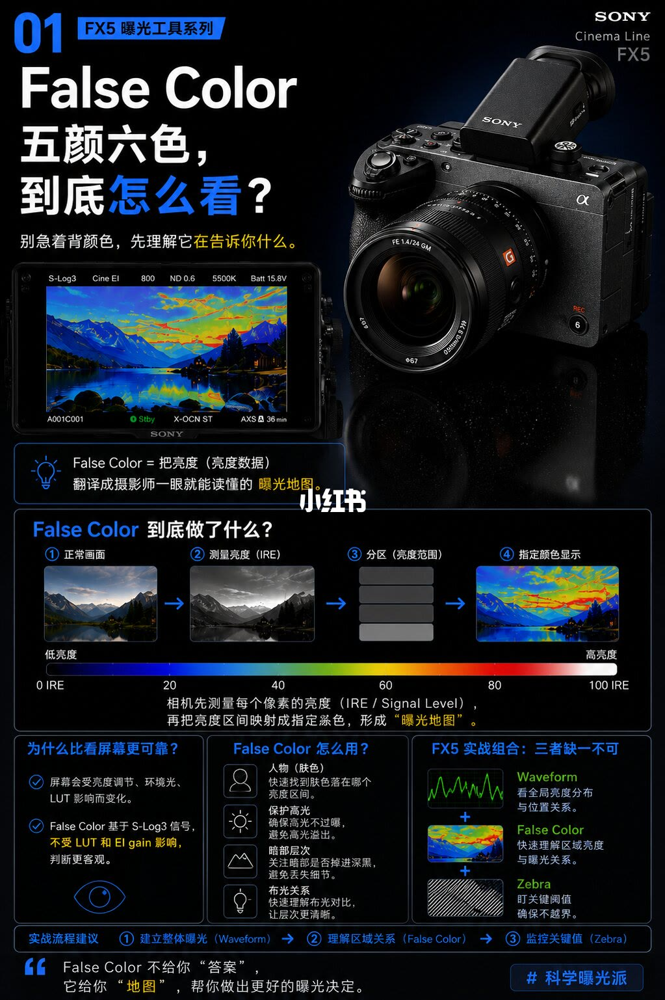
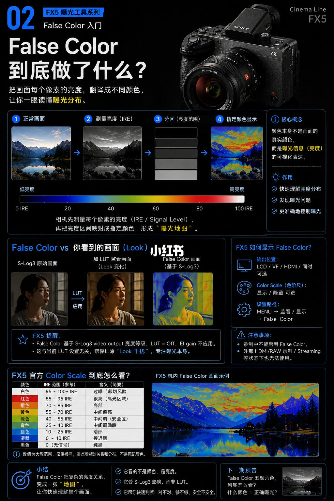
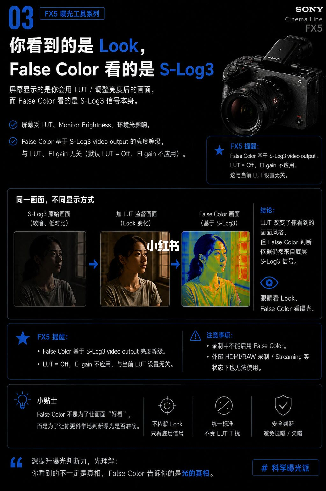
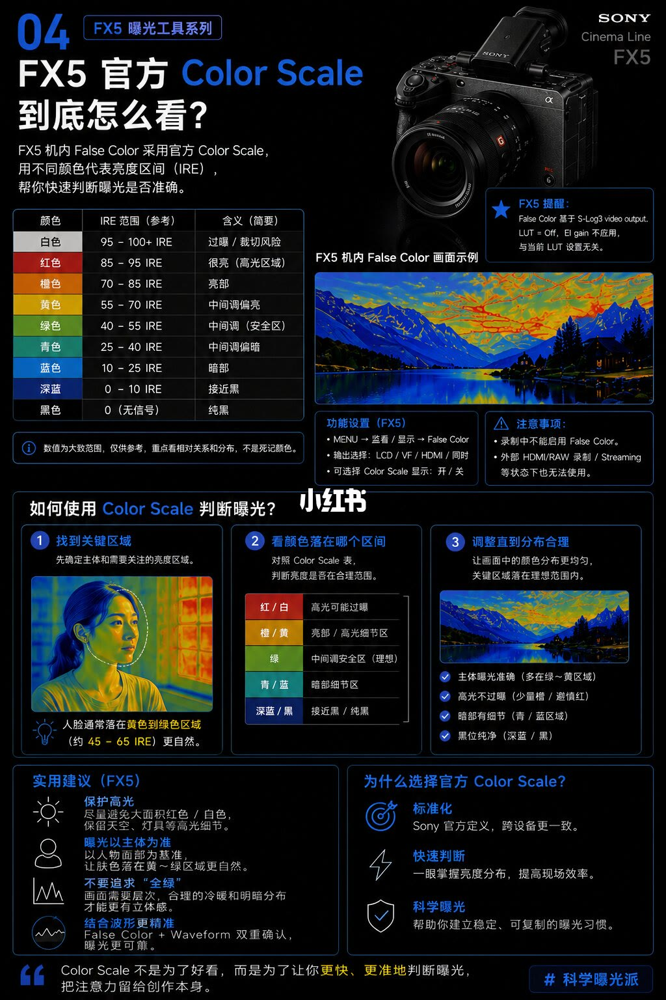
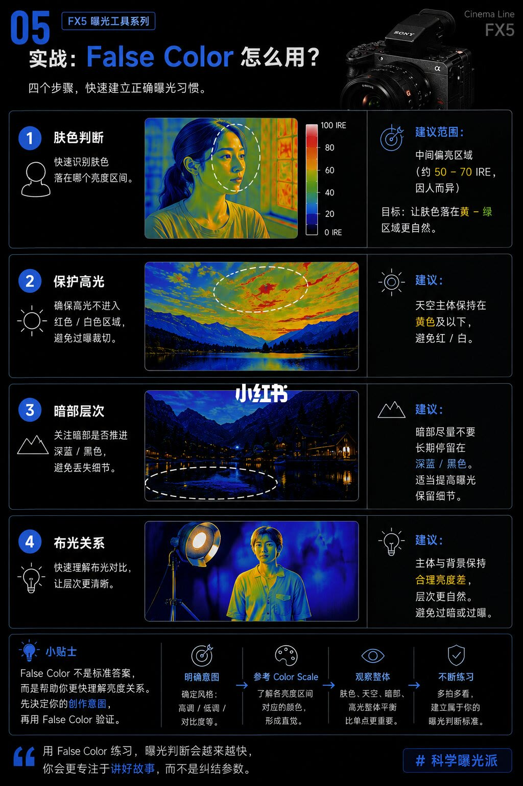
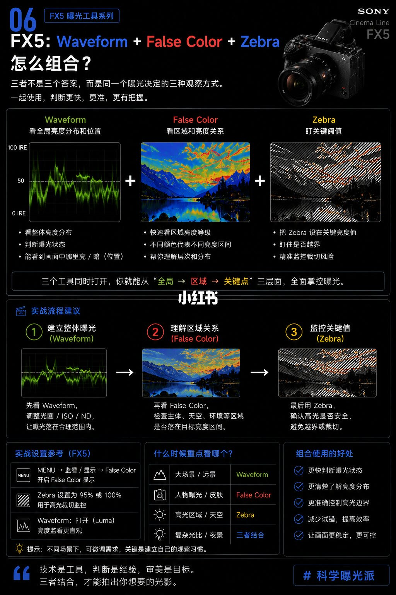

图文实录 · 小红书 · 西游中的宋悟能
FX5 False Color 五颜六色，到底怎么看？
颜色不是景物的本色，是把每个像素的亮度译成一张曝光地图。先别背「某种颜色等于正确曝光」。在 FX5 上它看的是 S-Log3 信号，再和波形、斑马分工：全局、区域、关键阈值。
1/6
它给的是地图，不是答案
开篇定义：False Color 把亮度数据翻译成摄影师一眼能读的曝光地图。流程画成四步：正常画面，测量亮度（IRE），按亮度范围分区，再指定颜色显示。页上有一条从低到高的示意色条，两端大约对应接近黑和高光；中间各色的精确刻度这页没有写成表，不在这里补数字。相机先测每个像素的亮度（IRE / 信号电平），再把区间映射成指定颜色。
比看屏幕更稳的理由：屏幕会受亮度调节、环境光和 LUT 影响；False Color 基于 S-Log3 信号，不受 LUT 或 EI 增益影响。用法四件：找肤色落在哪一段、保住高光别裁切、看暗部有没有掉进死黑、读布光的对比和层次。FX5 实战组合写成三者缺一不可：波形看全局亮度分布和位置，False Color 看区域亮度关系，斑马盯关键阈值。建议顺序是先用波形建立整体曝光，再用 False Color 看区域，最后用斑马盯阈值。页脚：它不给你答案，它给你地图。

2/6
每个像素的亮度被译成颜色
标题问 False Color 到底做了什么：把画面每个像素的亮度译成不同颜色，让曝光分布一眼可读。四步流程和示意色条再次出现，说明仍是先测 IRE，再映射成颜色，形成曝光地图。核心概念：颜色本身不是画面的真实颜色，而是曝光信息（亮度）的可视化。作用是快速理解亮度分布、发现曝光问题、更准确地控制曝光。
同一张人像并排三格：S-Log3 原始画面发灰发平；加 LUT 的监看是 Look，肤色和反差变自然；False Color 仍按 S-Log3 着色。FX5 提醒：False Color 基于 S-Log3 视频输出的亮度电平，LUT 关闭，EI 增益不作用，因此不受当前 LUT 设置干扰。
显示位置可选 LCD、取景器、HDMI，或同时输出；色标可开可关。路径：菜单 → 监看/显示 → False Color。注意：录制中不能启用；外录 HDMI/RAW 或推流时不可用。
页上 Color Scale 表（数值写明是近似参考，重点看相对关系和分布）：白色 95–100+，过曝、有裁切风险；红色 85–95，很亮、高光区域；橙色 70–85，亮部；黄色 55–70，中间偏亮；绿色 40–55，中间调、安全区；青色 25–40，中间偏暗；蓝色 10–25，暗部；深蓝 0–10，接近黑；黑色为 0 且无信号，纯黑。小结三句：看的是亮度不是色彩；受 S-Log3 影响、不受 LUT 影响；用来判断曝光是否合适、是否够、是否安全。下页预告：什么颜色等于正确曝光。

3/6
眼睛看 Look，伪色看 S-Log3
标题把两套显示拆开：你看到的是 Look，False Color 看的是 S-Log3。屏幕画面受 LUT、监视器亮度和环境光影响。False Color 依据 S-Log3 视频输出的亮度电平，与 LUT 和 EI 增益无关（LUT 关闭，EI 增益不作用）。同一画面三格再比一次：S-Log3 原片低反差；加 LUT 的监看是观感；False Color 仍回到原信号上的亮度分区。结论：LUT 改变的是看起来的风格，判断始终基于底下的 S-Log3。一句对照：眼睛看 Look，False Color 看曝光。
注意再次写明：录制中不能启用；外录 HDMI/RAW 或推流时不能用。提示：它不是为了让画面「好看」，而是做曝光判断。三条好处：不依赖 Look、只看信号；标准统一、不被 LUT 打扰；用来避开过曝和欠曝。页脚：要提高曝光判断，先明白你看见的不一定是光的实情。

4/6
按官方色标读区间，不要追全绿
这一页讲 FX5 机内官方 Color Scale：用颜色代表亮度区间（IRE），帮助判断曝光。色表与第 2 页相同：白 95–100+ 过曝/裁切风险，红 85–95 很亮/高光，橙 70–85 亮部，黄 55–70 中间调偏亮，绿 40–55 中间调/安全区，青 25–40 中间调偏暗，蓝 10–25 暗部，深蓝 0–10 接近黑，黑为 0 无信号、纯黑。页注同样写数值是近似，看相对分布，不要死背某一种颜色。
技术提醒与第 2 页一致：基于 S-Log3 视频输出，与当前 LUT 无关（LUT 关闭，EI 增益不作用）。菜单仍是 菜单 → 监看/显示 → False Color；可输出到 LCD、取景器、HDMI 或同时显示，色标显示可开关。录制中、外录 HDMI/RAW 或推流时不能用。
读色标的三步：先定主体，人脸的例子写成落在黄到绿、约 45–65 IRE 时更自然；再对区域——红/白可能过曝，橙/黄是亮部与细节，绿是中间调安全区，青/蓝是暗部细节，深蓝/黑接近纯黑；最后把分布调合理：主体多在绿到黄，高光不裁切（橙色尽量少、避开红），暗部留在青/蓝，黑位干净落在深蓝/黑。实用建议四条：保护高光，避免大片红/白，好留住天空和灯的细节；主体优先，以脸为基准（黄到绿）；不要追求整幅都是绿，层次来自冷暖、明暗混在一起；和波形一起做双重确认。用官方色标的理由：索尼定义跨设备一致、现场判断快、方便养成可重复的曝光习惯。页脚：色标不是为了好看，是为了更快、更准地判断曝光。

5/6
四步实战：肤色、高光、暗部、布光
副题是四个步骤，用来建立曝光习惯。第一步看肤色落在哪一段亮度。人像示意里脸部主要是绿和黄；建议范围写成中间偏亮、约 50–70 IRE，并注明因人而异，目标是让肤色落在黄到绿、看起来更自然。示意图旁有一条垂直色条，刻度与第 2、4 页的表格不完全同形，看不清的刻度不另编。第二步保护高光：不要让高光进入红/白，以免裁切；风景例子里天空最亮处呈红，建议天空主体停在黄及以下，避开红/白。第三步看暗部层次：不要让暗部长期停在深蓝/黑，否则细节丢失；夜景例子的暗处呈深蓝和黑，建议适当提高曝光把细节留下来。第四步读布光：主体和背景保持合理亮度差，层次更自然，同时避免过暗或过曝。
提示：False Color 不是标准答案。先决定创作意图，再用它验证。操作流：明确意图（高调、低调、对比等）→ 参考 Color Scale，把区间和颜色对上 → 看整体，肤色、天空、暗部、高光的平衡比单点更重要 → 多拍多看，建立自己的判断。页脚：练熟之后，注意力会回到讲故事，而不是纠结参数。

6/6
波形、伪色、斑马各看一层
三种工具看的是同一次曝光决定。波形看全局亮度分布和位置：整体落在哪、亮部和暗部位于画面何处，示意是 0–100 IRE 的亮度波形。False Color 看区域和亮度关系，快速核对各区域落在哪一段、层次是否分开。斑马盯关键阈值，设在要守的亮度上，看高光有没有越界、有没有裁切风险。顺序概括成：全局 → 区域 → 关键点。
实战三步：先用波形把光圈、ISO、ND 调到整体波形落在合理范围；再用 False Color 看主体、天空、环境是否落在目标区间；最后用斑马确认高光安全、避开裁切。设置：菜单 → 监看/显示 → False Color 打开；斑马设 95% 或 100%，用来盯高光裁切；波形用 Luma，监看更直观。什么时候侧重哪一个：大场面、远景偏波形；人像、肤色偏 False Color；高光和天空偏斑马；复杂光比和夜景三个一起用。好处写成判断更快、分布更清楚、高光更准、少试错、画面更稳。页脚：技术是工具，判断是经验，审美是目标。

汇总
地图确认意图，不代替意图
结论
False Color 把 S-Log3 亮度译成颜色，方便看肤色、高光、暗部和布光落在哪一段。它不回答「哪种颜色才算拍对了」。先定画面要什么，再用波形看全局、用伪色看区域、用斑马守高光阈值。
支撑页
定义和三工具顺序在 1/6、6/6。色表在 2/6、4/6。Look 与 S-Log3 的差别在 3/6。四步实战在 5/6。
边界
色表数值页上写的是近似参考。人脸亮度 4/6 写约 45–65 IRE，5/6 写约 50–70 IRE 且因人而异，两页没有合成一个数。录制中不能开；外录 HDMI/RAW 或推流时不可用。判断绑在 S-Log3 上，LUT 关闭、EI 增益不作用。第 1 页示意色条和第 5 页人像旁色条的逐格刻度无法确认，不另编。